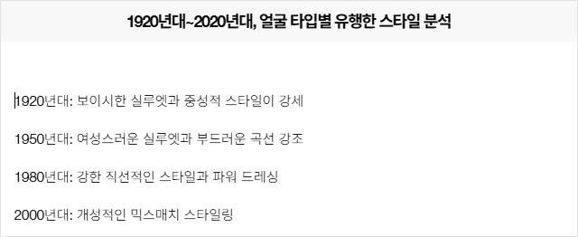
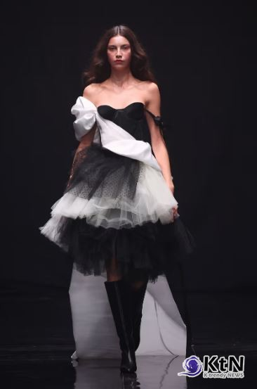
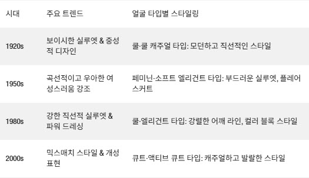
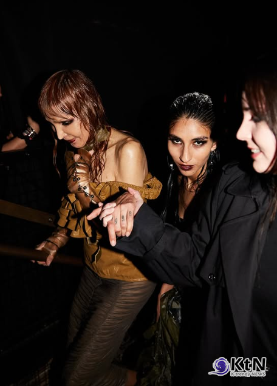
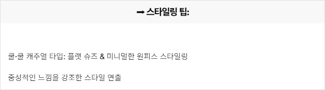
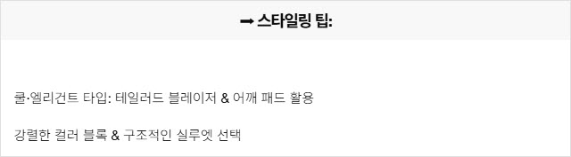
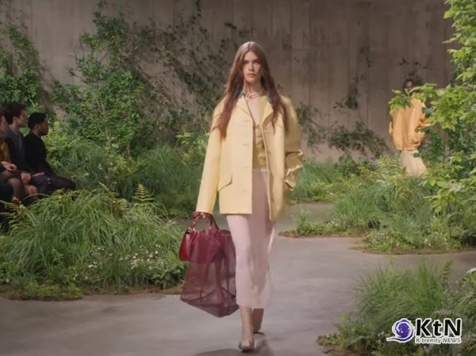
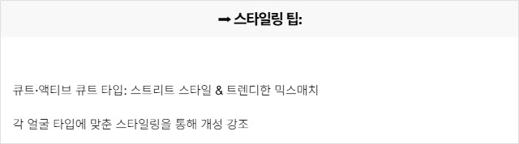
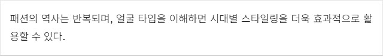

CMK NEWS
| 제목 | [패션 & 문화 리포트] 얼굴 타입과 시대별 패션 트렌드 - 스타일의 역사적 변화 |
|---|---|
| 작성자 | 관리자 |
| 등록일 | 2025-02-20 |
| 조회수 | 206 |
|
✔ 패션 트렌드는 시대에 따라 변하지만, 얼굴 타입별 스타일링 원칙은 존재한다
루이 비통이 2025년 가을·겨울 프리컬렉션 ‘New Formal’(뉴 포멀)을 공개하며, 남성 테일러링의 새로운 방향성을 제시했다.
[KtN 박준식기자] 패션의 흐름은 바뀌지만, 얼굴 타입에 맞는 스타일은 지속된다. 패션은 단순한 유행이 아니다. 시대별로 유행하는 스타일이 다르지만, 얼굴 타입에 따라 어울리는 실루엣과 스타일링의 원칙은 일정하게 유지된다. 『Face type, 얼굴 타입 진단』에서는, “각 시대별 패션 트렌드는 얼굴 타입과 조화를 이루는 스타일이 유행했고, 이에 따라 스타일링의 방향성이 달라졌다”고 설명한다. CMK이미지코리아 조미경 대표는 이에 대해 “시대별 패션 트렌드를 분석하면, 얼굴 타입이 스타일링의 핵심 요소로 작용해 왔음을 알 수 있다”며, “과거 트렌드에서 얼굴 타입별 스타일링을 분석하면, 현대적인 스타일 해석에도 도움이 된다”고 강조한다. [20세기 이후 얼굴 타입별 패션 스타일의 변화] 트렌드 속에서도 변하지 않는 원칙

 대니 레인케의 FW25 컬렉션은 패션이 단순한 스타일링을 넘어, 시대를 기록하는 중요한 매개체임을 다시금 입증했다.
『Face type, 얼굴 타입 진단』에서는, “각 시대별 트렌드는 얼굴 타입별 스타일링 방향에 영향을 주었으며, 이를 통해 스타일링의 흐름을 읽을 수 있다”고 설명한다. ➡ 시대별 얼굴 타입별 유행한 스타일 분석

 엘레나 벨레즈(Elena Velez)의 FW25 컬렉션, ‘YR006: LEECH’는 단순한 패션 쇼를 넘어, 현대 여성성을 둘러싼 이중적 서사를 해체하고 재구성하는 대담한 실험이었다.
[시대별 트렌드 속에서 얼굴 타입을 활용한 스타일링] 변하는 유행, 변하지 않는 스타일 원칙 ✅ 1. 1920s – 보이시 & 중성적 실루엣이 주류를 이룬 시대 『Face type, 얼굴 타입 진단』에서는, “쿨 타입 & 쿨 캐주얼 타입은 1920년대의 보이시한 스타일과 가장 조화를 이룬다”고 분석한다.

✅ 2. 1950s – 곡선적인 실루엣과 우아함이 강조된 시대 『Face type, 얼굴 타입 진단』에서는, “페미닌 타입 & 소프트 엘리건트 타입은 1950년대 스타일이 가장 자연스럽다”고 설명한다.
✅ 3. 1980s – 강렬한 실루엣과 파워 드레싱의 시대 『Face type, 얼굴 타입 진단』에서는, “쿨 타입 & 엘리건트 타입은 1980년대의 강한 직선적인 실루엣이 가장 잘 어울린다”고 분석한다.

✅ 4. 2000s 이후 – 개성적인 스타일과 믹스매치 시대
 구찌의 2025 크루즈 컬렉션은 남성성과 여성성을 결합한 톰보이 시크 여성복이 주를 이루었다
『Face type, 얼굴 타입 진단』에서는, “현대 스타일링은 얼굴 타입을 고려해 개성을 강조하는 방식으로 변화하고 있다”고 분석한다.

[전문가 코멘트] 얼굴 타입 분석을 통해 시대별 스타일링을 해석해야 한다 CMK이미지코리아 조미경 대표는 “패션 트렌드는 시대에 따라 바뀌지만, 얼굴 타입별 스타일링의 기본 원칙은 유지된다”며, “자신의 얼굴 타입을 이해하면 과거 트렌드에서도 자신에게 어울리는 스타일을 찾아낼 수 있다”고 강조한다.

조미경 대표는 참가자들에게 자신의 피부 톤, 눈 색깔, 머리 색깔 등을 기준으로 퍼스널 컬러를 찾는 과정을 진행했다.
얼굴 타입을 고려한 스타일링이 시대를 초월한 패션 공식이 된다 2025년 패션 트렌드는 과거 트렌드에서 영감을 받아 재해석되는 흐름을 보이고 있다. 하지만 얼굴 타입에 따른 스타일링의 원칙은 변하지 않으며, 이를 바탕으로 각 시대의 유행을 자신에게 맞게 적용하는 것이 중요하다. 패션은 단순한 유행이 아니다. 얼굴 타입을 이해하고, 시대별 스타일을 해석하는 것이야말로 가장 세련된 스타일링 전략이다. ✅ "패션의 역사는 반복된다. 얼굴 타입을 이해하면, 과거와 현재를 잇는 가장 이상적인 스타일을 완성할 수 있다.”
|
|
| 이전글 | 얼굴진단(라인/이미지/파츠) 일본국제자격과정 개최 안내 |
|---|---|
| 다음글 | [패션 리포트] 나에게 맞는 패션 브랜드 찾기 - 얼굴 타입별 스타일 가이드 |